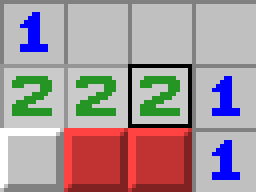

← Back to Projects
Minesweeper

Project Overview
Minesweeper adalah game klasik yang dibangun dari nol menggunakan bahasa C++. Permainan ini menguji kemampuan logika dan strategi pemain dalam menemukan semua kotak aman tanpa menginjak ranjau yang tersembunyi di balik grid permainan.
Proyek ini dibuat sebagai latihan penerapan konsep pemrograman dasar seperti array 2D, rekursi, dan logika kondisional. Setiap kotak yang dibuka akan menampilkan angka yang menunjukkan jumlah ranjau di sekitarnya, membantu pemain menentukan langkah selanjutnya.
Technologies Used
- C++
- Standard Library
- Console I/O